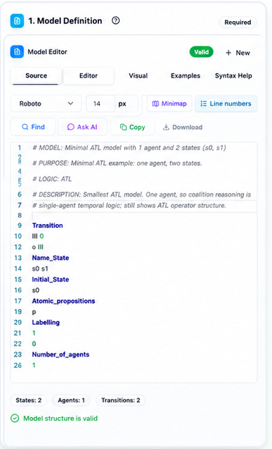
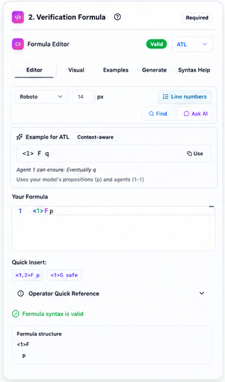
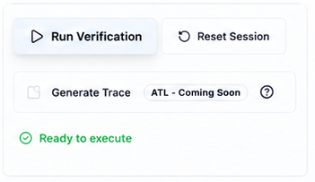
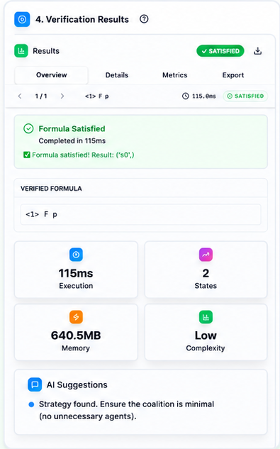

01
Model definition
Start from an example, upload a model, or build one step by step.

Project Website
Verify Multi-Agent Systems
directly from the browser.
VITAMIN is an online verification framework where models, logics, and algorithms can be combined, extended, and executed through a web Workbench.
How VITAMIN works
Example, upload, or guided creation.
Agents, states, actions, transitions, labels, and resources.
Choose the formalism and the property to verify.
Execute model checking and inspect the result.
Start with a guided workflow, upload your own model, or extend the framework with new models, logics, and verification procedures.
Non-experts
Build a model step by step through guided inputs. Define agents, states, actions, transitions, labels, and resources without prior knowledge of the input format.
Experts
Upload a formal model, select the corresponding logic, provide the property to verify, and run model checking directly from the Workbench.
Developers
Extend VITAMIN by integrating new models, logics, parsers, or verification algorithms into its modular architecture.
VITAMIN brings model definition, formula specification, verification execution, and result inspection into a single browser-based workflow.
Start from an example, upload a model, or build one step by step.

Select the logic and define the property to verify.

Execute model checking directly from the browser.

Inspect satisfaction, execution time, metrics, and suggestions.

Example workflow: load a model, specify an ATL formula, run verification, and inspect the result in the Workbench.
VITAMIN separates the main ingredients of the verification process: models, logics, and verification algorithms.
This modular design makes it possible to extend the framework with new formalisms and procedures.
Model formalisms
Specification logics
The available combinations depend on the integrated verification modules. Open the Workbench examples to explore concrete configurations.
VITAMIN separates model parsing, formula parsing, and verification algorithms into independent layers. The engine connects these components and returns a consistent verification result.
Parser layer
Model parsers read .txt model files and build in-memory game structures. Formula parsers translate logical specifications into trees used by the algorithms.
Engine layer
The runner validates inputs, selects the correct parsers, reads the model file, calls the logic algorithm, and normalises errors.
Algorithm layer
Each logic is implemented through an explicit-state model-checking algorithm that evaluates the parsed formula over the parsed model and returns a standard result.
Implementation note: Current algorithms are explicit-state, making them readable and trace-friendly, although large models can be memory-heavy.
Read the architecture documentation ↗Scientific publications, demo papers, and workshop contributions describing the design, implementation, and use of VITAMIN.
@inproceedings{DBLP:conf/paams/FerrandoM25,
author = {Angelo Ferrando and
Vadim Malvone},
editor = {Philippe Mathieu and
Fernando De la Prieta},
title = {On the Usability and Extensibility of {VITAMIN}},
booktitle = {Advances in Practical Applications of Agents, Multi-Agent Systems,
and Computational Social Science: The {PAAMS} Collection - 23rd International
Conference, {PAAMS} 2025, Lille, France, June 25-27, 2025, Proceedings},
series = {Lecture Notes in Computer Science},
pages = {354--359},
publisher = {Springer},
year = {2025},
url = {https://doi.org/10.1007/978-3-032-07638-0\_30},
doi = {10.1007/978-3-032-07638-0\_30},
timestamp = {Sun, 01 Feb 2026 13:32:02 +0100},
biburl = {https://dblp.org/rec/conf/paams/FerrandoM25.bib},
bibsource = {dblp computer science bibliography, https://dblp.org}
}@inproceedings{DBLP:conf/ifaamas/0001M25,
author = {Angelo Ferrando and
Vadim Malvone},
editor = {Sanmay Das and
Ann Now{\'{e}} and
Yevgeniy Vorobeychik},
title = {{VITAMIN:} VerIficaTion of {A} MultI ageNt system},
booktitle = {Proceedings of the 24th International Conference on Autonomous Agents
and Multiagent Systems, {AAMAS} 2025, Detroit, MI, USA, May 19-23,
2025},
pages = {3023--3025},
publisher = {International Foundation for Autonomous Agents and Multiagent Systems
/ {ACM}},
year = {2025},
url = {https://dl.acm.org/doi/10.5555/3709347.3744079},
doi = {10.5555/3709347.3744079},
timestamp = {Tue, 29 Jul 2025 16:22:34 +0200},
biburl = {https://dblp.org/rec/conf/ifaamas/0001M25.bib},
bibsource = {dblp computer science bibliography, https://dblp.org}
}@inproceedings{DBLP:conf/icaart/0001M25,
author = {Angelo Ferrando and
Vadim Malvone},
editor = {Ana Paula Rocha and
Luc Steels and
H. Jaap van den Herik},
title = {{VITAMIN:} {A} Compositional Framework for Model Checking of Multi-Agent
Systems},
booktitle = {Proceedings of the 17th International Conference on Agents and Artificial
Intelligence, {ICAART} 2025 - Volume 1, Porto, Portugal, February
23-25, 2025},
pages = {648--655},
publisher = {{SCITEPRESS}},
year = {2025},
url = {https://doi.org/10.5220/0013349600003890},
doi = {10.5220/0013349600003890},
timestamp = {Tue, 15 Apr 2025 11:20:20 +0200},
biburl = {https://dblp.org/rec/conf/icaart/0001M25.bib},
bibsource = {dblp computer science bibliography, https://dblp.org}
}@inproceedings{DBLP:conf/woa/0001M24,
author = {Angelo Ferrando and
Vadim Malvone},
editor = {Marco Alderighi and
Matteo Baldoni and
Cristina Baroglio and
Roberto Micalizio and
Stefano Tedeschi},
title = {Hands-on {VITAMIN:} {A} Compositional Tool for Model Checking of Multi-Agent
Systems},
booktitle = {Proceedings of the 25th Workshop "From Objects to Agents", Bard (Aosta),
Italy, July 8-10, 2024},
series = {{CEUR} Workshop Proceedings},
pages = {148--160},
publisher = {CEUR-WS.org},
year = {2024},
url = {https://ceur-ws.org/Vol-3735/paper\_12.pdf},
timestamp = {Fri, 26 Jul 2024 22:35:03 +0200},
biburl = {https://dblp.org/rec/conf/woa/0001M24.bib},
bibsource = {dblp computer science bibliography, https://dblp.org}
}
@article{DBLP:journals/corr/abs-2403-02170,
author = {Angelo Ferrando and
Vadim Malvone},
title = {{VITAMIN:} {A} Compositional Framework for Model Checking of Multi-Agent
Systems},
journal = {CoRR},
volume = {abs/2403.02170},
year = {2024},
url = {https://doi.org/10.48550/arXiv.2403.02170},
doi = {10.48550/ARXIV.2403.02170},
eprinttype = {arXiv},
eprint = {2403.02170},
timestamp = {Tue, 02 Apr 2024 16:35:34 +0200},
biburl = {https://dblp.org/rec/journals/corr/abs-2403-02170.bib},
bibsource = {dblp computer science bibliography, https://dblp.org}
}VITAMIN is developed by researchers and developers working at the intersection of formal methods, multi-agent systems, and verification tools.
Co-creator
Unimore · Italy
Co-creator
Télécom Paris · France
Research Engineer
Télécom Paris · France